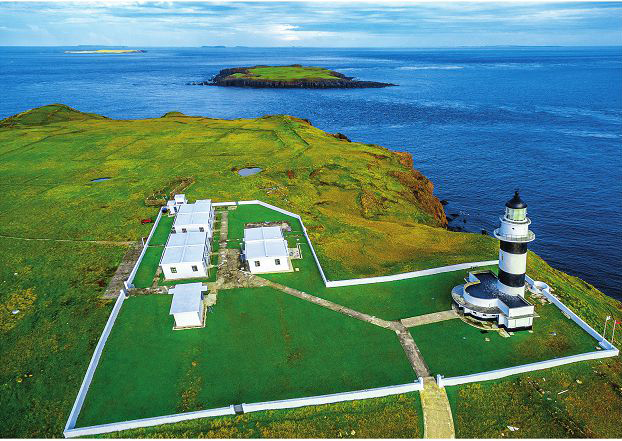
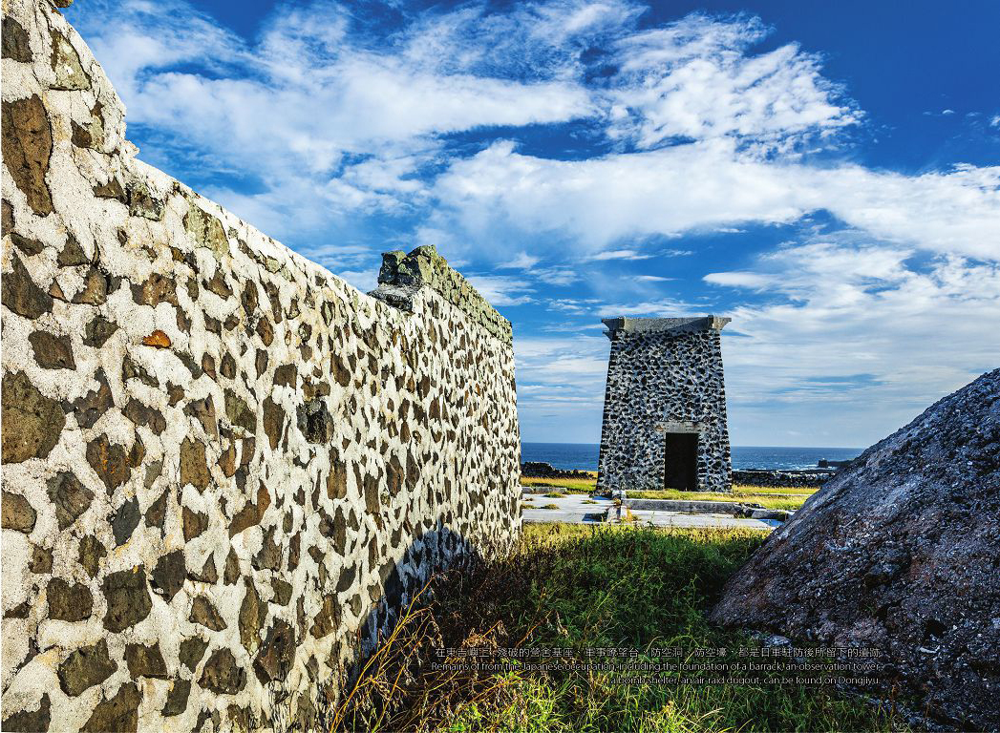
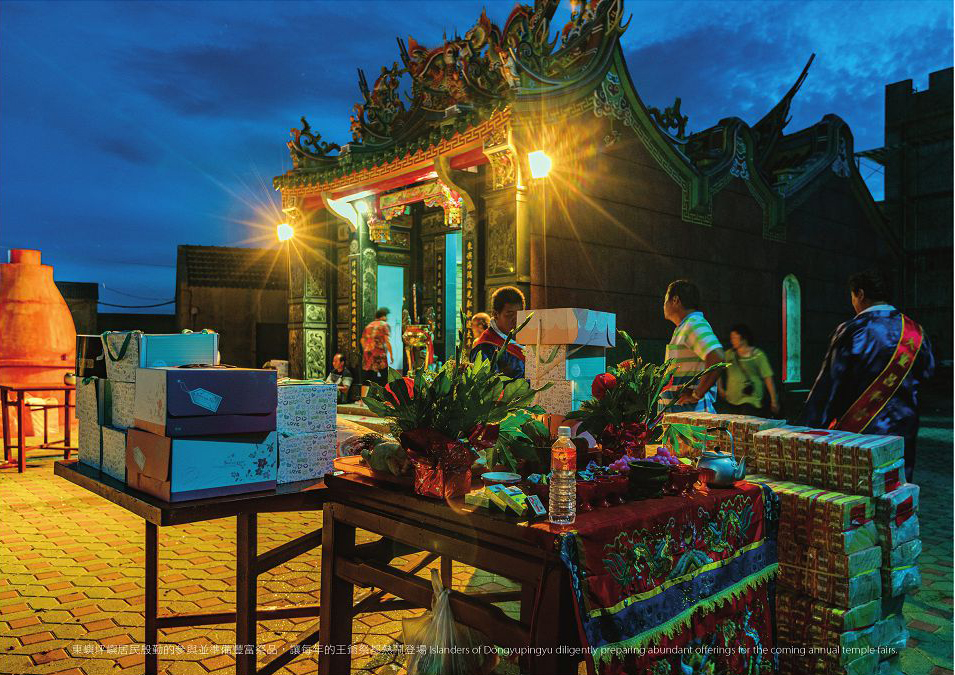

LOGO

豎立在東吉嶼上的東吉燈塔，是島上重要的地標，更是臺澎水域的一盞明燈，讓傳說中的黑水溝不再詭譎，屹立島上不分晝夜指引著往來船隻平安航行。


東吉嶼東北方有一處日治時期日軍登島所建的砲兵房舍遺址，當地人稱為「兵厝」。由目前所殘留的防備空襲的防空壕、依地形挖掘的防空洞、軍事瞭望台以及木質宿舍殘留的建築基座，可窺探其當時的盛況。
在東吉港北側的崖壁上岩有著圓形節裡的微輝長岩，是早期當地漁民航行定位的參考。因為形似眼睛，後人又把它稱為「東吉之眼」。

啟明宮又名「東吉廟」，是東吉嶼的信仰中心。供奉徐府王爺，農曆11月27日為其誕辰，廟宇是早期海洋文化島嶼在科技尚未發達之際，當地人民心靈重要的寄託。
Burger